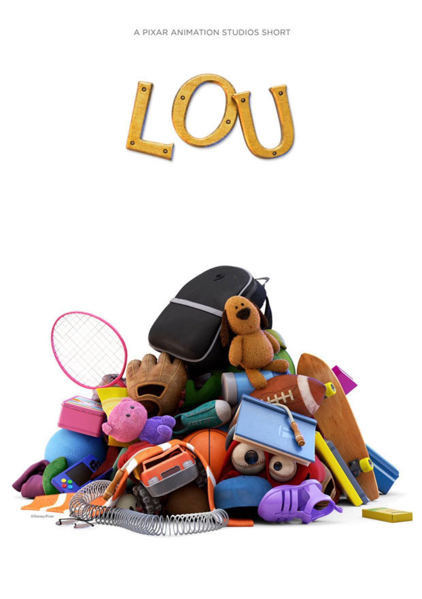
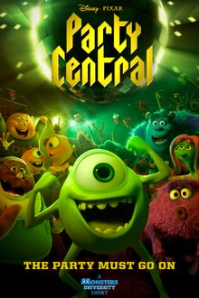
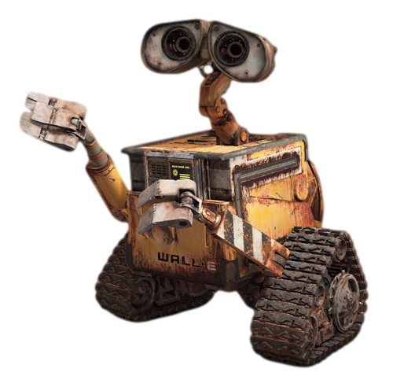
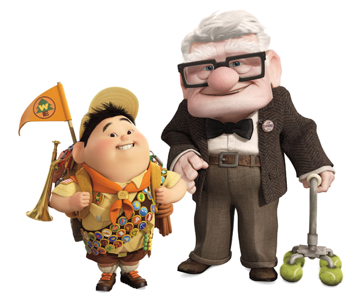

Também conhecida como Pixar Animation Studios, é uma empresa de
animação
digital norte-americana pertence à The Walt Disney Company. É
especializada em alta tecnologia de computação gráfica.
Site Oficial
Alguns dos Primeiros Filmes:
- 1995
- Toy Story: É conhecido por ser o primeiro longa-metragem dos
estúdios Pixar e também o primeiro da história do cinema
totalmente
feito por computação gráfica.
- 2001
- Monstros S.A.: O filme conta a história sobre mosntros que
assustam
crianças para conseguir seus gritos e gerar energia para seu
mundo.
- 2003
- Procurando Nemo: Vencedor do Oscar de Melhor Filme de Animação,
apresenta um mundo onde os peixes e outros seres marinhos vivem
numa
sociedade semelhante à de seres humanos.
- 2004
- Os Incríveis: Foi indicado a 4 Oscars, e venceu 2: Melhor Filme
de
Animação e Melhor Edição de Som. Conta a história de Beto e
Helena
Pera, seres humanos dotados de super poderes, que se casam e
agora
têm três filhos: Violeta, Flecha e i bebê Zezé, na cidade de
Metroville.
- 2007
- Ratatouille: Conta a história de Rémy, um rato vivendo em Paris
que
sonha em se tornar um chef de cozinha.
Grupo de Pesquisa Pixar
- Desenvolver tecnologias
- Promover a inovação
- Fornecer consultoria
- Participar de comunidades de pesquisas externas
Alguns Filmes de Curta-Metragem da Pixar:
- Lou 
- Piper

- Day & Night

- Air Mater

- Party Central 
Galeria
Vídeos
Imagens

WALL-E: Conta a história de um robô chamado WALL-E,
criado no ano de 2100 para limpar a Terra coberta
por
lixo.

UP: Conta as aventuras que Carl (um idoso viúvo com
seu
sonho de se mudar para o magnífico Paraíso das
Cachoeiras, na Venezuela) enfrenta ao conhecer
Russel
(um garoto escoteiro amante da natureza com seu
sonho de
protegê-la). Muntz (o explorador difamado buscando
restabelecer sua reputação), Kevin (a ave tropical)
e
Dug (um golden retriver falante).

Valente: Merida é uma habilidosa arqueira e a
impetuosa
filha do Rei Fergus e da Rainha Elinor. Determinada
a
trilhar o seu próprio destino, Merida desafia um
costume
ancestral, se negando a casar com o primogênito de
um
dos quatro clãs.